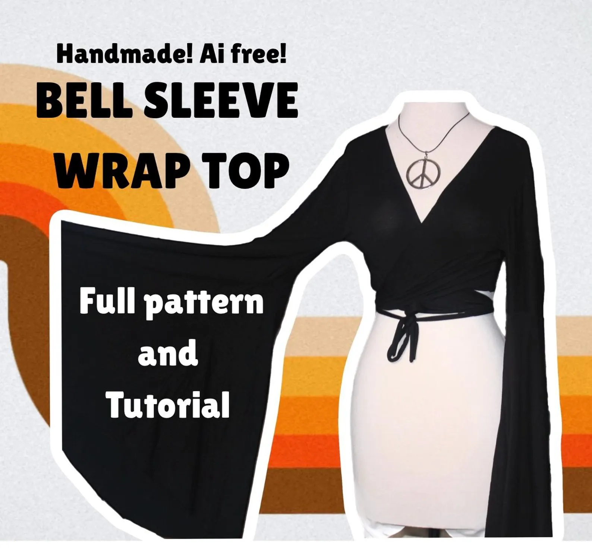

Made to make
Patterns
The world produces 92 tonnes of textile waste per year thanks to the fast fashion industry.
My mission is to bring back slow fashion by encouraging people to make their own clothes again with
beginner friendly patterns and tutorials. I have reinveted the pattern at Alt Em Custom for the true beginner.
No confusing symbols or vague instructions, simple sizing options, and clear video and picture instructions.
Fashion is for everyone, you can make any of my
original designs at home with the patterns linked below.

Number one pick for beginners
The Bell Sleeve Wrap Top
Materials Needed:
- 2 Yards of Stretch Knit Fabric
- A Matching Thread Color
- Access to a Printer
- Sewing Machine
- Tape/glue
- Fabric Scissors
- Tailors chalk or Fabric Marker
What you get:
- US Letter print-at-home pattern PDF
- Written instructions with diagrams
- Full video walk-through